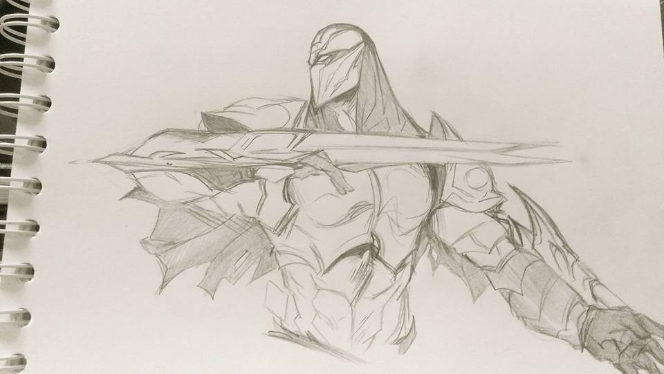
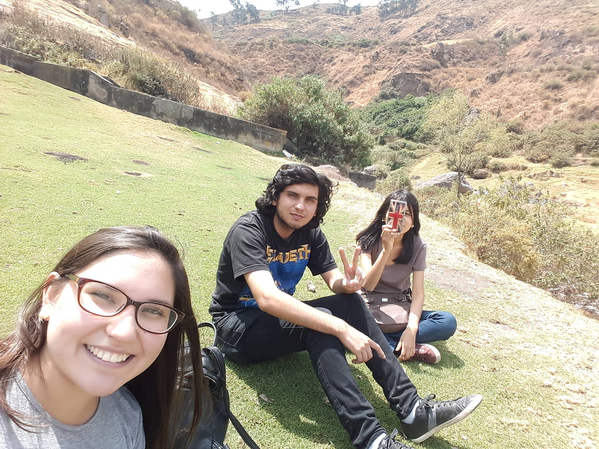

¡Feliz cumpleaños Yexi!
Quería darte este regalo, ya que no hay otra cosa que pueda darte.
No tengo muchas imágenes y muchas cosas que pueda decirte, pero espero que al menos pueda servirme esto de despedida.
Quería darte este regalo, ya que no hay otra cosa que pueda darte.
No tengo muchas imágenes y muchas cosas que pueda decirte, pero espero que al menos pueda servirme esto de despedida.
Este regalo fue algo muy especial para mí.
Nunca me sentí tan especial, que alguien me diera un regalo haciendome sentir importante.

Nunca me sentí tan especial, que alguien me diera un regalo haciendome sentir importante.
Esta foto fue de aquella vez que caminamos de Tottus a Miraflores y
llegamos a la parque del amor. Para mí fue la primera vez que visité ese
lugar, fue muy especial.

Tus regalos más especiales para mí, tus dibujos. Siempre los amé.

Recuerdo cuando tocaba en tu cuarto, cuando tocaba en la casa. Cuando me
escuchabas. Me hizo feliz. Muchas gracias.

Fue especial cuando me acompañaste a Canta con mi familia. Nunca hice
algo así. Comenzaste a hacerte una parte aún más especial de mi vida.


Tuvimos momentos buenos, momentos malos. Pasamos muchas cosas juntos.
Este recuerdo escuchando música en tu cuarto.
Este recuerdo escuchando música en tu cuarto.
Esta foto me recuerdo uno de los momentos más difíciles y bajos que
enfrenté en mi vida.
A pesar de todo, me diste otra oportunidad y me sentí vivo de nuevo.

A pesar de todo, me diste otra oportunidad y me sentí vivo de nuevo.
Luego de ese momento difícil, comenzamos a vivir juntos, nos conocimos
mejor y pasamos momentos muy buenos. Este es un recuerdo de aquellos
días en los que íbamos a casa de tu mamá y tomábamos chelita escuchando
música.
Ya, en estos momentos, sin tí, soy como un fantasma, regresando sobre
sus propios pasos.
Los lugares importantes, los lugares especiales...


Los lugares importantes, los lugares especiales...
Por último, me queda este recuerdo en el que más tarde, ese mismo día,
tus palabras me quedarían grabadas en la piel.
"Haría cualquier cosa por tí".
Algún día estaré a la altura de tus palabras.

"Haría cualquier cosa por tí".
Algún día estaré a la altura de tus palabras.
Pensé en escribirte una historia en esta parte final, pero nuestra
historia es algo que va más allá de lo que pueda imaginar en este
momento.
Tengo tantas cosas que quiero decirte, tanto que quiero demostrarte, pero no es el momento, ya tal vez no hay oportunidad. No lo sé, no puedo ver el futuro...
Lo que si tengo claro es que debo aprender a no depender de nadie y si elijo compartir mi vida, debe ser por amor y no por dependencia emocional.
Tengo tantas cosas que quiero decirte, tanto que quiero demostrarte, pero no es el momento, ya tal vez no hay oportunidad. No lo sé, no puedo ver el futuro...
Lo que si tengo claro es que debo aprender a no depender de nadie y si elijo compartir mi vida, debe ser por amor y no por dependencia emocional.
Me enseñaste muchas cosas y esta es la última y mejor cosa que aprendí
de ti.
A pesar que duela, que sea difícil y que llore con mucho dolor, siempre debo elegirme a mí y mi bienestar.
Hablándo con el psicólogo, me preguntó que si decidieras volver conmigo pero poniendome condiciones, ¿qué estaría dispuesto a hacer?.
En ese momento mi corazón resucitó y me volvió el alma al cuerpo y respondí en instantáneo... "Haría cualquier cosa que me pida, lo que sea."
A pesar que duela, que sea difícil y que llore con mucho dolor, siempre debo elegirme a mí y mi bienestar.
Hablándo con el psicólogo, me preguntó que si decidieras volver conmigo pero poniendome condiciones, ¿qué estaría dispuesto a hacer?.
En ese momento mi corazón resucitó y me volvió el alma al cuerpo y respondí en instantáneo... "Haría cualquier cosa que me pida, lo que sea."
Entendí que no puedo hacer eso, tengo que entenderte, tengo que soltarte
y dejarte ser libre, vivir, elegir tu bienestar y si alguna vez surge
alguna oportunidad, sea porque te eliges a tí, porque te amas y eliges
compartir conmigo porque ves en mí algo bueno para tí.
Yo debo hacer lo mismo, debo elegirme a mí y elegirte por amor, no porque no puedo vivir sin tí, sino que puedo vivir sin tí, pero a pesar de eso, te elijo y te comparto mi vida.
Yo debo hacer lo mismo, debo elegirme a mí y elegirte por amor, no porque no puedo vivir sin tí, sino que puedo vivir sin tí, pero a pesar de eso, te elijo y te comparto mi vida.